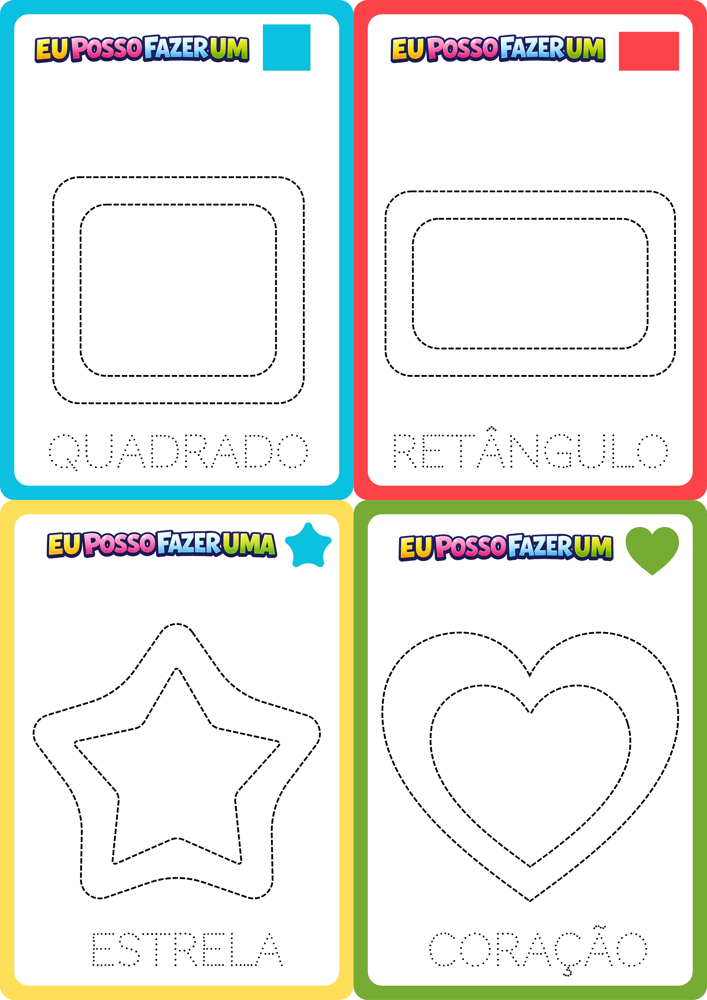

Kit pranchas para massinha

Faixa Etária: 3 - 5 anos
Preço: R$ 5,00
Descrição: Arquivo em PDF pronto para imprimir. Atividade lúdica ideal para desenvolver a coordenação motora fina e o reconhecimento das formas geométricas.
Voltar para o Início